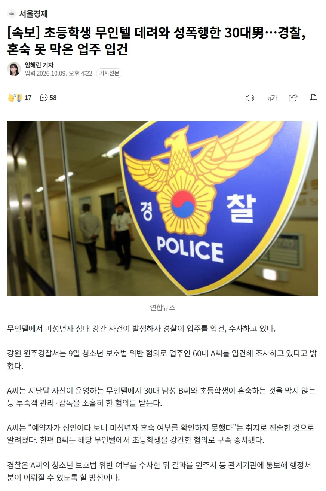

강간범은 당연히 찢어죽여야 하는건 맞는데...
이건 좀...

강간범은 당연히 찢어죽여야 하는건 맞는데...
이건 좀...

"나는 그런 거 못봤어!! 콘크리트 쳐놓던가!! 다 니책임이야!! 손해배상해!!"
그 산에 경고판 넘어가서 실족사하는 양반들이 진짜 자주 대는 핑계라는 건 알아?? 사실 범죄자들 마인드도 비슷비슷함
그거랑은 다르지 피해자가 업주한테 강간당한거에 대한 피해배상을 요구하진 않잖아
책임은 경고판 무시한 사람이 지는 거야, 저 업주처럼... 그게 상식인데 왜 어디서 이상한 잣대를 배워와가지고 악을 쓸까?
하긴 그 정도 정신세계 아니면 여기서 경찰 탓 못하지, 나도 실족사해놓고 국가배상 요구하는 사람들 이해를 못하겠어
그논리면 저 모텔에서도 혼숙금지는 하고 있을텐데
쌩까고 들어간 범죄자가 주인의 죄까지 써야하는거 아니야?
비유가 전혀 안맞아
야 너 진짜 속 편하게 산다
나도 좀 비슷한 일이 있긴 했어 계정거래한 거 먹튀당했는데 약관 어긴 거 아니냐며 경찰서에서 접수 안받더라, 당연히 그거 따로 사기 따로인데 개무식하니까 헛소리 하는 거겠지?
만원따리로 변호사 부르기도 귀찮아서 그냥 넘어가긴 했는데 너같은 애들이 견찰되는거구나;; 순경시험은 보지 말길 바란다
니 논리면 위험한 산에 경고판만 세워놓고 감시하지 않은 관리인이 책임져? 아니지 ㅋㅋ
니 비유는 오히려 국가의 책임이고 국가에 배상요구하는 사람들이 옳게 되는데? 바보야?
정 무인으로 운영하려면 cctv등으로 출입하는 사람들 자세히 관찰했어야지
무인운영이 불법이 아니라고 해서 미성년자 출입 관리도 제대로 안해놓고 방법이 없다~ 라고 하면 안되지
논리적으로 생각해보면 유인모텔만 있었으면 충분히 방지할 수 있었을 범죄인데 무인모텔들이 범죄의 약한 고리부분을 만들어줬기 때문에 벌어진 범죄이고 앞으로도 충분히 계속해서 벌어질 수 있는 범죄이지
그러니까 불법으로 하든가 해야지
불법까지는 아닌게 본인들이 보안을 신경쓰면서 범죄를 방지하려하면 운영할 수는 있다고 봄
그렇다고 경찰들이 상주하면서 지켜줄 수는 없는 노릇이니 업주들이 보안업체를 쓰든 보안솔루션을 쓰든 해서 '알아서' 방지해야할 문제겠지
어떻게 막지 저걸? 개쩌는 방법이나 ai 카메라 인식 뭐 그런거로도 노답일거같은데 보안업체 상주를 시키는건 걍 무인텔이 아니라 보안업체한테 카운터 시키는일이고...
그건 우리가 고민할 필요는 없는 부분이고 뿌린 사람이 거둬야지
ㅇㅇ 지금은 법이 그러니 거두긴 해야지
근데 논의는 필요하고
덮어놓고 업주 비판하긴 어렵다고 생각함
법적으로 무인업체는 무인으로 운영하는 만큼 보호받지 못할 수 있는 부분들을 명확하게 하고 또 책임져야할 부분들도 업종별로 명확히 정해야할듯
애초에 무인텔이라는 업종이 따로 있는게 아님
그냥 숙박업인데 주인이 직원을 안쓰는거야
와 ㅋㅋㅋㅋㅋㅋㅋㅋㅋㅋㅋㅋㅋㅋㅋㅋㅋㅋ어이가없네 ㅋㅋㅋㅋ
느그 애미~~~~
입건은 당연한거고 주의의무를 한 부분이 있으면 참작이 되든지 하것지
당연히 영업할때는 관련규정에 맞춰서 해야지 우리 업종에선 그런거 다 못지켜요ㅠㅠ할거면 법 왜 만듦?
인건비 아낄거면 사고도 각오하고 책임져야지 뭐
최소한 무인텔 할꺼면 입실 시간에 cctv라도 쳐보고 확인했어야지
아니 그니까 막을방법이 없는데 아예 불법으로 하든가 해야하지 않냐는 말이 이해가 안가시는거임??